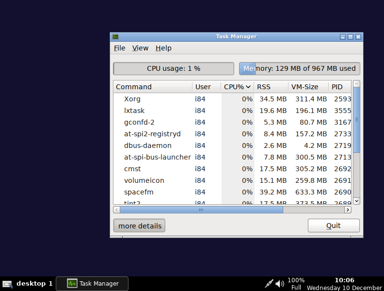
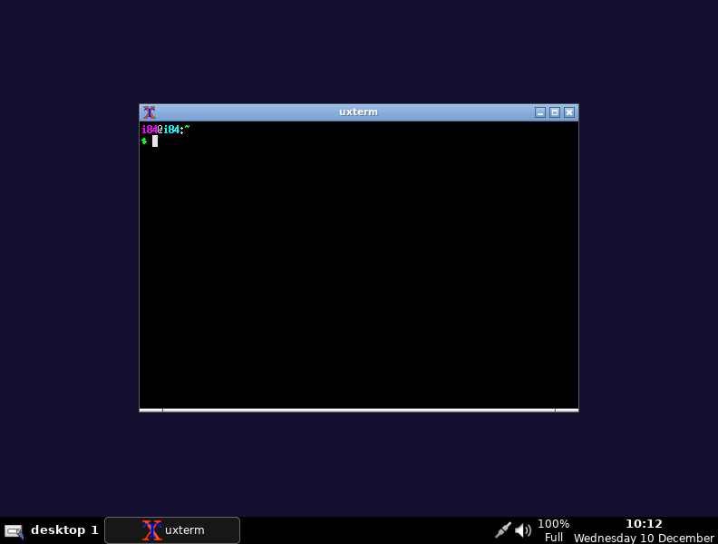
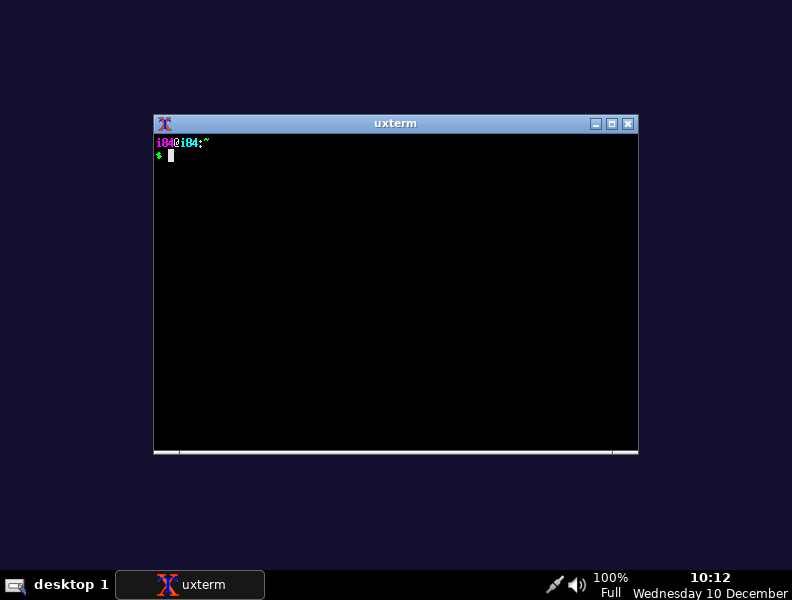

.___ ______ _____ .____ ____ ___
| |/ __ \ / | || | \ \/ /
| |> < / | || | \ /
| / -- \/ ^ / |___ / \
|___\______ /\____ ||_______ \/___/\ \
\/ |__| \/ \_/
I84LX is a lightweight and fast snapshot Live Linux System,Base on Antix.
Screenshot:
 

[2025/12/10]1.0 IS RELEASE
[2025/12/11]1.0 X32 is RELEASEING!
[2025/12/13]1.0 be Alpha!
[2025/12/13]1.0 X32 DELAY!
[2025/12/13]1.001 X64 ALPHA RELEASE! UPDATE:DELETE SO MANY SH!T!